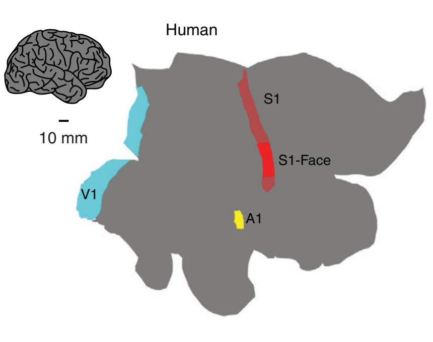
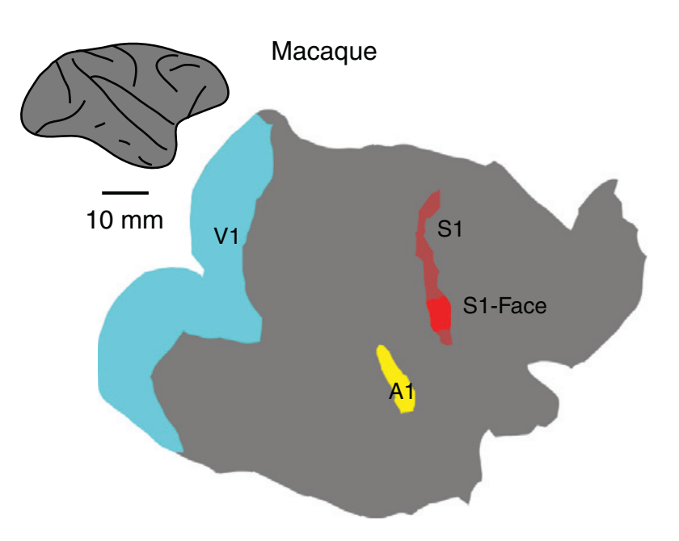
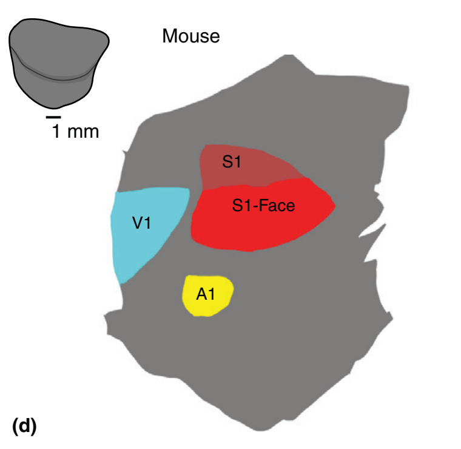
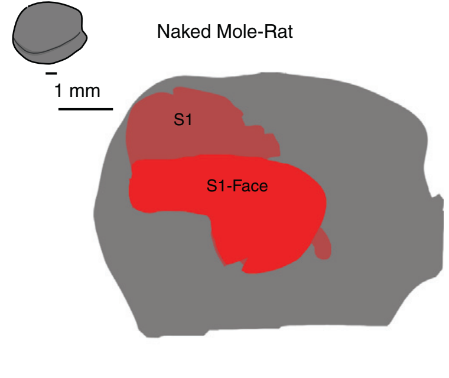
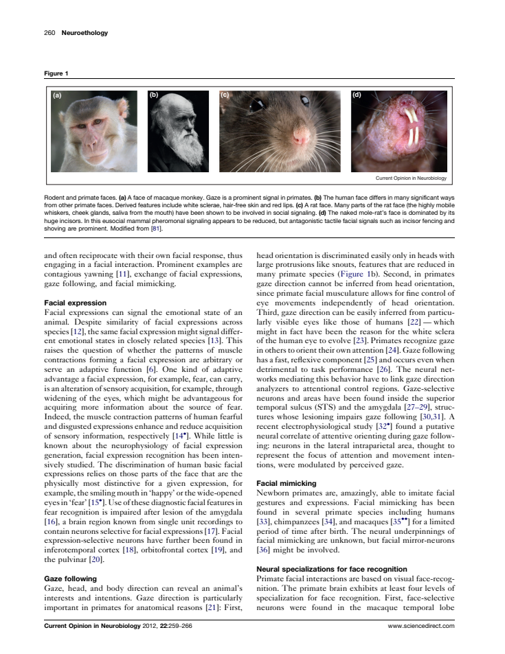
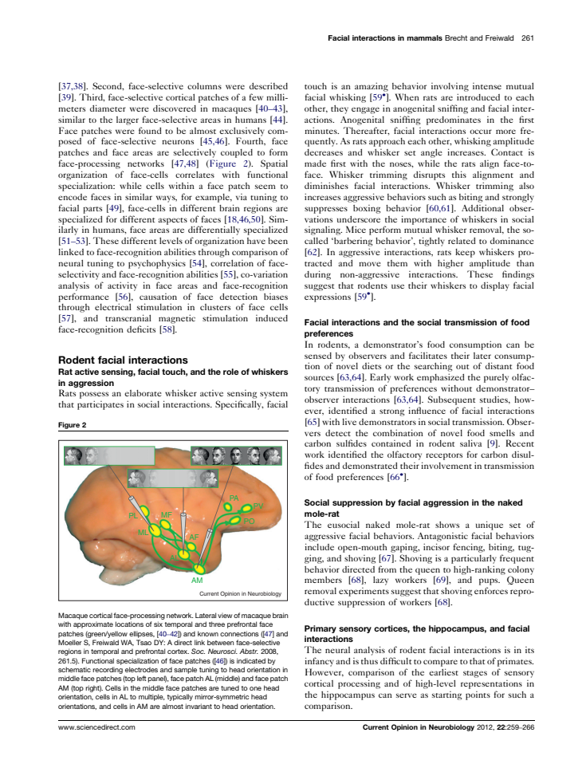
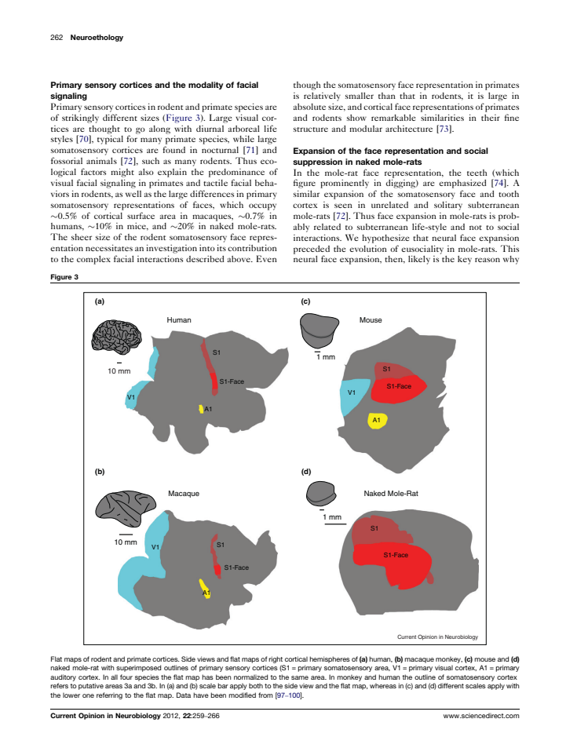

Flatmap tracing review
Source image, saved anatomical outlines and scale endpoints. Unfinished fields are NA.
fig03a_human — illustrative summary; not an independent animal
Provisional digitization; inspect anatomical boundaries.


ImageJ ROIs · Calibrated TIFF
| Field | mm² | % neocortex | Status |
|---|
| drawn_cortical_outline | 70517.573 | NA | provisional; anatomical review required |
| S1 | 1704.302 | NA | provisional; anatomical review required |
| S1_face | 434.896 | NA | provisional; anatomical review required |
| V1 | 2850.521 | NA | provisional; anatomical review required |
| A1 | 194.715 | NA | provisional; anatomical review required |
fig03b_macaque — illustrative summary; not an independent animal
Provisional digitization; inspect anatomical boundaries.


ImageJ ROIs · Calibrated TIFF
| Field | mm² | % neocortex | Status |
|---|
| drawn_cortical_outline | 6632.326 | NA | provisional; anatomical review required |
| S1 | 107.965 | NA | provisional; anatomical review required |
| S1_face | 28.093 | NA | provisional; anatomical review required |
| V1 | 1071.539 | NA | provisional; anatomical review required |
| A1 | 56.326 | NA | provisional; anatomical review required |
fig03c_mouse — illustrative summary; not an independent animal
Provisional digitization; inspect anatomical boundaries.


ImageJ ROIs · Calibrated TIFF
| Field | mm² | % neocortex | Status |
|---|
| drawn_cortical_outline | NA | NA | provisional; anatomical review required |
| S1 | NA | NA | provisional; anatomical review required |
| S1_face | NA | NA | provisional; anatomical review required |
| V1 | NA | NA | provisional; anatomical review required |
| A1 | NA | NA | provisional; anatomical review required |
fig03d_naked_mole_rat — illustrative summary; not an independent animal
Provisional digitization; inspect anatomical boundaries.


ImageJ ROIs · Calibrated TIFF
| Field | mm² | % neocortex | Status |
|---|
| drawn_cortical_outline | 26.254 | NA | provisional; anatomical review required |
| S1 | 8.191 | NA | provisional; anatomical review required |
| S1_face | 5.068 | NA | provisional; anatomical review required |
| A1; V1 | NA | NA | not_measurable |
All-figure source assessment
Figure 3a–d: human, macaque, mouse and naked mole-rat illustrative maps, all right hemispheres. S1-face is a subset of S1 and must not be added to it. Human, macaque and mole-rat use their own printed bars. The mouse flatmap has no unambiguously assigned local bar and remains pixel-only. The independent gray outline is schematic tissue, not a certified animal neocortex denominator.
Source-toggle precision review · Field inventory
Figure 1 — assessed_excluded
Animal photographs; no cortical field geometry.

Figure 2 — assessed_excluded
Folded lateral brain/network illustration; surface foreshortening and hidden sulcal cortex prevent planar field areas.

Figure 3 — digitized_provisional
4 measured view(s), 14 field/component observations; 0 boundaries remain NA for anatomical review. Illustrative, partial, repeated and unscaled restrictions apply. Panels a–d are measured separately.
